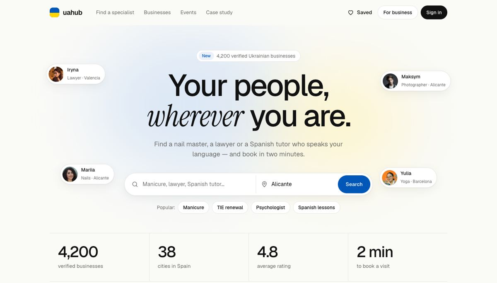

1
Hero and search
A first screen with one job
- A night globe of Europe — nothing about Spain or the task
- A paid ad (Premium car dealer) sits right next to the headline
- One search field with no city
- Social icons compete with the search button

- Light hero, real specialists with role and city around the headline
- Search with two fields: what and where
- Popular queries as chips for people who don't know the word yet
- Numbers right below as proof
Why
The first screen has to answer “is this for me, and can I find what I need?” in a few seconds. Faces of a lawyer in Valencia and a nail master in Alicante say it faster than a globe.
A paid ad in the hero sells the most valuable space to one advertiser at the cost of every visitor. Paid visibility stays — but as a labelled Featured card lower on the page.
Every service here is local, so the city is part of the search, not a filter you find later.